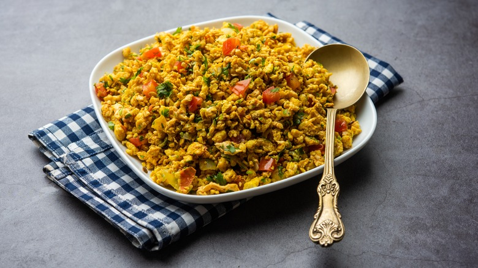

DAY 1
Breakfast:
-
EGG BHURJI
Egg Bhurji is a popular and flavorful Indian dish made with scrambled eggs, onions, tomatoes, and a variety of spices. It's a versatile and protein-rich option for breakfast or any meal of the day.
Lunch:
-
CHICKEN CURRY

Chicken curry can be a part of a balanced diet when prepared with attention to nutritional content and portion sizes.
Dinner:
-
FISH CURRY

Certainly! Fish curry can be a delicious and nutritious addition to a balanced diet. It provides a good source of protein, omega-3 fatty acids, vitamins, and minerals.
DAY 2
Breakfast:
-
OMELETTE

Certainly! Omelettes are a versatile and popular dish that can be a nutritious addition to a balanced diet.
Lunch:
-
MUTTON KEEMA
"Mutton Keema" is a dish made from minced mutton (goat meat). It's a popular non-vegetarian dish in many cuisines, including Indian cuisine.
Dinner:
-
SHRIMP MASALA
Shrimp Masala is a delicious and flavorful dish that can be part of a balanced diet. Shrimp itself is a good source of lean protein, and when prepared with spices and other ingredients in a masala, it adds variety to your meals.
DAY 3
Breakfast:
-
CHICKEN SANDWICH

A chicken sandwich can be a delicious and satisfying part of a balanced diet, providing a good mix of protein, carbohydrates, and fats.
Lunch:
-
EGG CURRY

Egg curry can be a nutritious and delicious addition to your diet, providing a good source of high-quality protein, vitamins, and minerals.
Dinner:
-
CHICKEN BIRYANI

Chicken Biryani is a popular and flavorful dish, but it's important to be mindful of your overall diet.
DAY 4
Breakfast:
-
EGG AND VEGETABLE WRAP

An egg wrap with vegetables is a nutritious and versatile meal that combines the protein-rich goodness of eggs with the vitamins and fiber from various vegetables.
Lunch:
-
LAMB CURRY

Lamb curry can be a delicious and nutritious addition to your diet when prepared with a focus on balanced nutrition. Lamb is a good source of high-quality protein, essential amino acids, and several vitamins and minerals.
Dinner:
-
GRILLED FISH
Grilled fish can be a healthy and delicious addition to a balanced diet. Fish is a great source of lean protein, omega-3 fatty acids, vitamins, and minerals. Grilling is a cooking method that imparts a smoky flavor without adding extra fats, making it a nutritious option.
DAY 5
Breakfast:
-
CHICKEN SAUSAGE
Chicken sausage is a good source of protein, which is essential for muscle repair, immune function, and overall body maintenance.
Lunch:
-
KEEMA PARATHA

Keema Paratha is a popular and delicious dish in Indian cuisine. It consists of spiced minced meat (usually lamb or chicken) stuffed inside a wheat flour flatbread (paratha).
Dinner:
-
PRAWN CURRY

Prawn curry can be a delicious and nutritious addition to your diet, providing a good source of lean protein and various essential nutrients.
DAY 6
Breakfast:
-
BURRITO
A burrito can be a versatile and delicious part of a balanced diet. It allows for a combination of protein, vegetables, and carbohydrates, making it a satisfying and filling meal.
Lunch:
-
CHICKEN KORMA
Chicken Korma is a flavorful and rich dish that originates from the Indian subcontinent. It typically consists of chicken cooked in a creamy and aromatic sauce made with yogurt, cream, and various spices. While it's delicious, it's important to consider its nutritional aspects in the context of a balanced diet.
Dinner:
-
EGG FRIED RICE

Egg rice is a versatile and nutritious dish that can be a part of a balanced diet. It provides a good combination of proteins, healthy fats, and carbohydrates.
DAY 7
Breakfast:
-
PIZZA WITH HAM EGGS

pizza with ham and eggs into a balanced diet. While pizza might not typically be considered a health food, you can make modifications to increase its nutritional value.
Lunch:
-
CHICKEN TABDOORI

Chicken Tandoori is a popular Indian dish that involves marinating chicken pieces in a mixture of yogurt and spices, then roasting or grilling until they achieve a flavorful and slightly charred exterior.
Dinner:
-
GRILLED SALMON
Grilled salmon is a popular and nutritious choice for a healthy diet. Salmon is rich in omega-3 fatty acids, high-quality protein, and various essential nutrients.